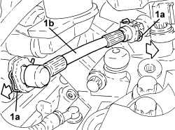

2127C23 PIPE FROM MASTER CYLINDER TO THREE-WAY CONNECTOR FOR ELECTROHYDRAULIC SELECTION GEARBOX - R.R
- Path
- Procedures > 21 GEARBOX UNIT > 2127 ELECTRO-HYDRAULIC SELECTION GEARBOX EXTERNAL CONTROLS > 2127C HYDRAULIC GEAR SELECTION SYSTEM > 2127C23 PIPE FROM MASTER CYLINDER TO THREE-WAY CONNECTOR FOR ELECTROHYDRAULIC SELECTION GEARBOX - R.R
- Kind
- repair procedure (removal / refitting; the operation number is the code)
- Applies to
- engines: 2.2 JTS; all production periods
- Interactive page
- https://sloeber94.github.io/elrnDB-aBrrSpdr/en/#/946004303
Applies to: engines: 2.2 JTS; all production periods
 Removing
Removing
 Refitting
Refitting- Place the gear lever in N.
- Connect an Examiner and run the depressurization procedure.
Op. 5530B52 BATTERY SUPPORT/DRIP TRAY - R.R
1. Retract the clips (1a) and remove the pipe from the master cylinder to the three-way connector (1b).

Applies to: engines: 2.2 JTS; all production periods
Refitting
Removing- Place the pipe from the master cylinder to the three-way connector in position and secure it using the retaining clips.
Op. 5530B52 BATTERY SUPPORT/DRIP TRAY - R.R
Op. 0010T61 ELECTROHYDRAULIC SELECTION GEARBOX CLUTCH FLUID - CHECK LEVEL AND TOP UP IF NECESSARY
Op. 0010T60 ELECTROHYDRAULIC SELECTION GEARBOX CLUTCH HYDRAULIC SYSTEM - BLEED AIR